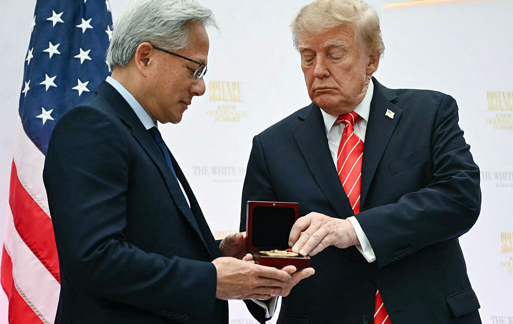

Technology · 30 Oct 2026
Trump ignored intel on China’s Nvidia spy to protect company’s stock, report says

Spy accused of exploiting Trump ties to Huang, funneling secrets to China.
Multiple independent publishers are reporting on the same development: Trump ignored intel on China’s Nvidia spy to protect company’s stock, report says.
The available reports place the development in the Technology category. The accounts were compared for agreement on the central event rather than simply shared names or broad topics.
One of the available reports describes the development this way: Spy accused of exploiting Trump ties to Huang, funneling secrets to China.
Readers should consult the linked source reports for additional context, updates and details that may change as the story develops.
Sources
This article was produced by the C. O. Eric AI Newsroom from the cited sources. It is published only after automated evidence and safety checks.